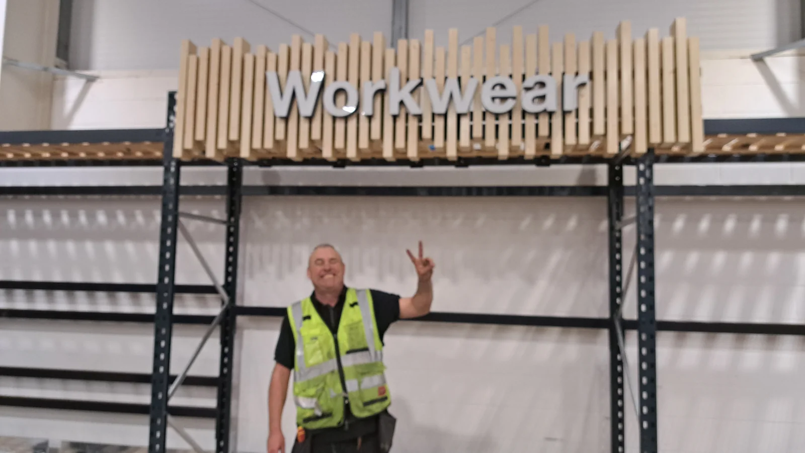
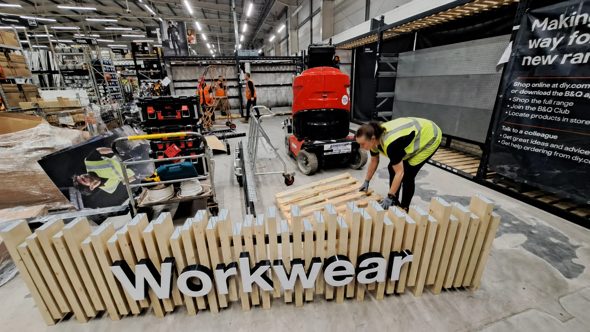
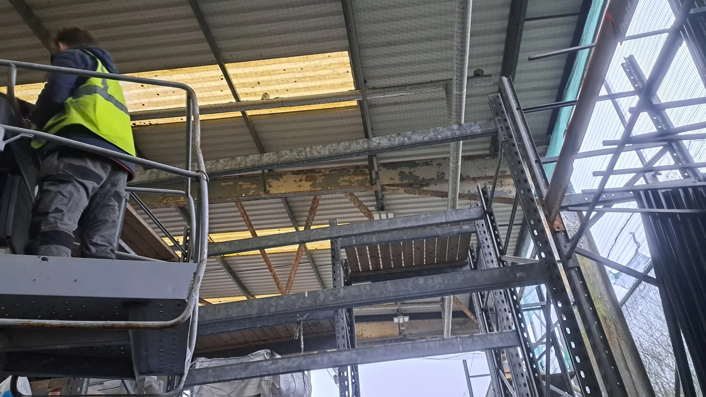

People with proof.
M-Hub connects real project experience with people, work photographs, CVs, qualifications and supporting evidence. It shows what the team can actually do, not just what a job title says.
Experience you can open up.

Marc Harris
CV, SMSTS, SSSTS, electrical qualifications, controls, security and supporting certificate scans.

Spencer Shone
National Juswrk project experience with qualification evidence linked directly from the profile.

Lisa Shone
Hospitality and administration experience combined with hands-on B&Q and Lidl retail-rollout support.
Not a job board.

Real work, not stock claims.
A selection of live retail installation, electrical and shopfitting work from the JusWrk project archive.

From person to project.
M-Hub provides the people and evidence layer. Juswrk shows delivery capability. MH-Control supports project information. SiteGuard carries the security offer.